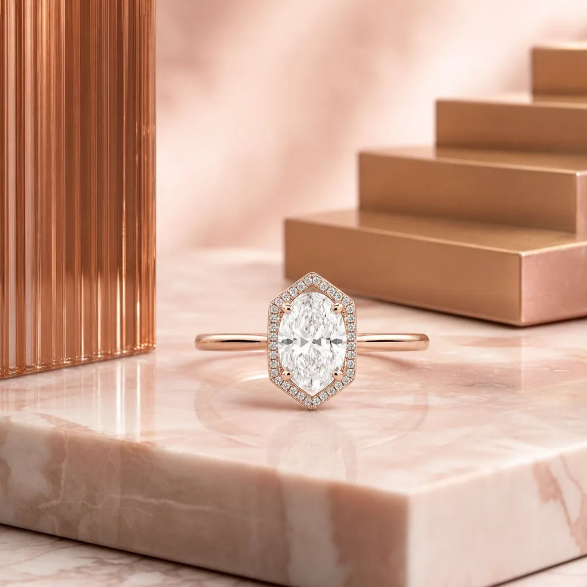

Choosing your gold: yellow, rose, white or platinum
How the metals differ, and how to choose the one that suits you.

Every Morrow ring can be made in 18ct yellow, rose or white gold, or in platinum. Each metal changes the character of a ring, so here is how they differ.
What 18ct means
18 carat gold is 75% pure gold. The remaining 25% is a mix of other metals that give the gold strength and colour. It is the classic choice for engagement rings: rich in colour and durable enough to be worn every day.
Yellow gold
Warm and traditional, yellow gold flatters warmer skin tones and suits champagne diamonds and coloured stones especially well. Many of our Art Deco designs are drawn in yellow gold for this reason.
Rose gold
Rose gold gets its soft pink colour from a higher share of copper in the alloy. It pairs beautifully with morganite and white diamonds, and gives a romantic, vintage feel.
White gold
White gold is usually finished with a thin layer of rhodium for a bright, cool white. Over years of wear the rhodium can fade slightly, and it can be refreshed by re-plating.
Platinum
Platinum is naturally white, so it never needs re-plating. It is denser and heavier than gold, which gives a ring a reassuring weight on the hand.
Not sure?
Tell us which metal you are considering when you request a quote, and we will talk you through the options for your design.